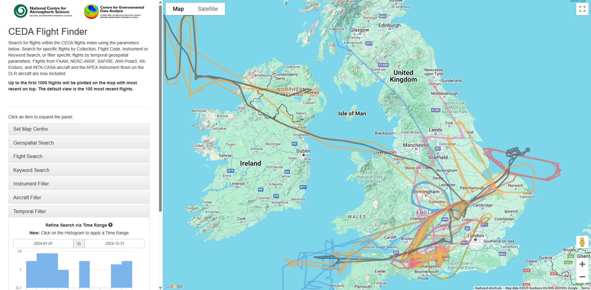

Flight-pipeline documentation
The CEDA Flight Finder tool allows searching for flights within the CEDA flights index using based on different paramenter parameters. Search for specific flights by Collection, Flight Code, Instrument or Keyword Search, or filter specific flights by temporal geospatial parameters. Flights from FAAM, NERC-ARSF, SAFIRE, AWI-Polar5, Kit-Enduro, and INTA-CASA aircraft and the APEX instrument flown on the DLR aircraft are now included. Up to the first 1000 flights will be plotted on the map with most recent on top. The default view is the 100 most recent flights.
The CEDA Flight Finder tool can be accessed here
{kind=link}
Contents:
Repository for python code to concatenate data sources and construct new flight records for CEDA flight-finder
Objectives
Mechanism for uploading new flights to stac index
Use ES Client to determine array of ids that currently exists in the index
Push new records that are not currently in the index
Remove or archive pushed records on local system
Installation
Clone the repository from github
- Install requirements into a local virtual environment:
python -m venv local
source local/bin/activate
pip install -r requirements.txtConfigure dirconfig with relative paths
Running the program
1. Use stac_template to write new records Follow the STAC template json file to create new flight records (more details further down)
2. Configure dirconfig file Add on lines 2 and 4 the directory paths to where your new flights to push are stored, and where the pushed flights should go once they have been uploaded to the index (store them or write DELETE to remove them from the local system)
3. Push New Flights
Run with command python flight_update.py add with a filled in dirconfig file to push new records to the index
Update Existing Flights
Note: In case of repair or adjustment to existing records, the individual records can be updated in place.
Run with command python flight_update.py update <pyfile>, where pyfile is a python file containing an update function that can be applied to each record in elasticsearch.
STAC Template
- From the template, the following should be filled in:
id (fnum/pcode * date)
es_id (random string of ASCII characters to generate one of 9 colours in flight finder)
description_path
collection
geometry.display.coordinates
geometry.display.type (if coordinates are not MultiLineString)
- properties:
data_format
start_datetime
end_datetime
flight_num (if applicable)
pcode (if applicable)
aircraft
variables
location
platform
instruments
pi
Geometries Development
Correct Version of mapping that exists in the arsf index
"spatial": {
"properties": {
"geometries": {
"properties": {
"display": {
"properties": {
"coordinates": {
"type": "double",
"index": false
},
"type": {
"type": "text",
"fields": {
"keyword": {
"type": "keyword",
"ignore_above": 256
}
}
}
}
},
"full_search": {
"type": "geo_shape"
},
"search": {
"type": "geo_shape"
}
}
}
}
}
Incorrect version currently in stac-flightfinder-items
"geometry" : {
"properties" : {
"display" : {
"properties" : {
"coordinates" : {
"type" : "float"
},
"type" : {
"type" : "text",
"fields" : {
"keyword" : {
"type" : "keyword",
"ignore_above" : 256
}
}
}
},
"geometries" : {
"properties" : {
"display" : {
"properties" : {
"coordinates" : {
"type" : "float"
},
"type" : {
"type" : "text",
"fields" : {
"keyword" : {
"type" : "keyword",
"ignore_above" : 256
}
}
}
},
"search" : {
"properties" : {
"coordinates" : {
"type" : "float"
},
"type" : {
"type" : "text",
"fields" : {
"keyword" : {
"type" : "keyword",
"ignore_above" : 256
}
}
}
}
},
"search" : {
"properties" : {
"coordinates" : {
"type" : "float"
},
"type" : {
"type" : "text",
"fields" : {
"keyword" : {
"type" : "keyword",
"ignore_above" : 256
}
}
}
}
}
}
Ammendments:
Remove geometries subfield.
Remove all subfields of search and just add
"type":"geo_shape".Add full_search sub_field with
"type":"geo_shape".